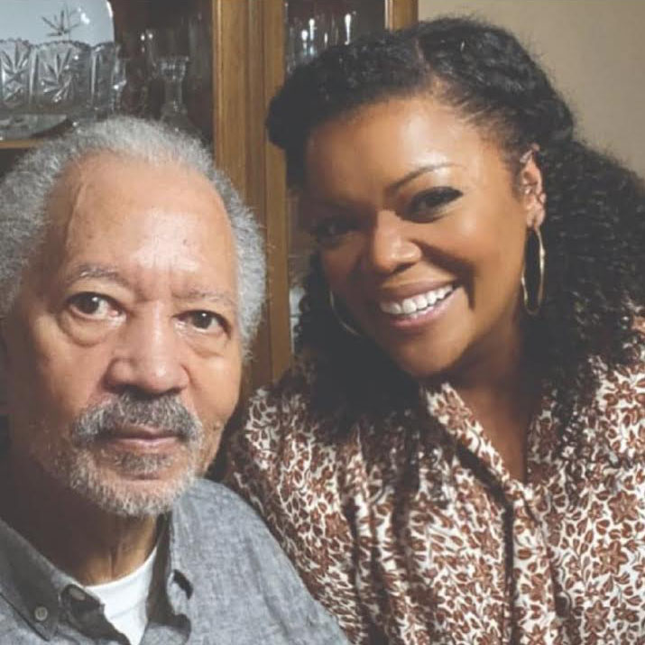

Persona 1
Karla Nguyen
Age:
43 years old
Gender:
Female
Profession:
HR Manager
Income:
$89,000
Status:
Married
Values:
Traveling, New experiences, reading, Friends and relationships, art and culture
Bio:
Karla is a passionate, driven professional, who is eager and determined to accomplish her goals. She enjoys spending time with family and and supporting her children while she cares for her aging father. She also enjoys immersing herself into the local cultural and could spend countless hours immersed in classic novels, browsing various artwork and scultptures at local galleries.
Persona 2
Anne Mckinney
Age:
57 years old
Gender:
Female
Profession:
Self Employed
Income:
$87,000
Status:
Married
Values:
Simplicity and stability, time spent on rewarding project goals, and a meal shared with loved ones.
Bio:
Kaitlin spends her days juggling the buys life of an entrepreneur, with the demanding role of being a care provider. However, she wouldn't have it any other way. She thrives off of the busyness of responsibility, and is always eager to get involved! She enjoys staying connected with a small circle of family and friends.